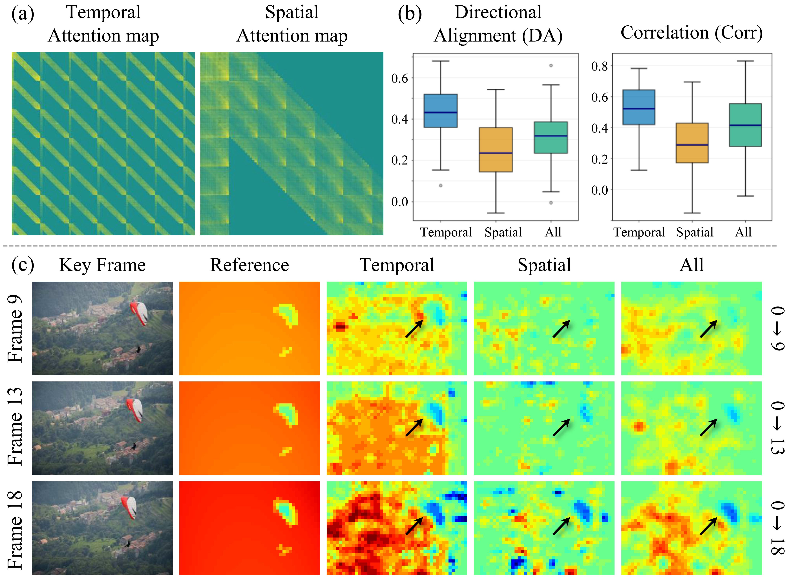
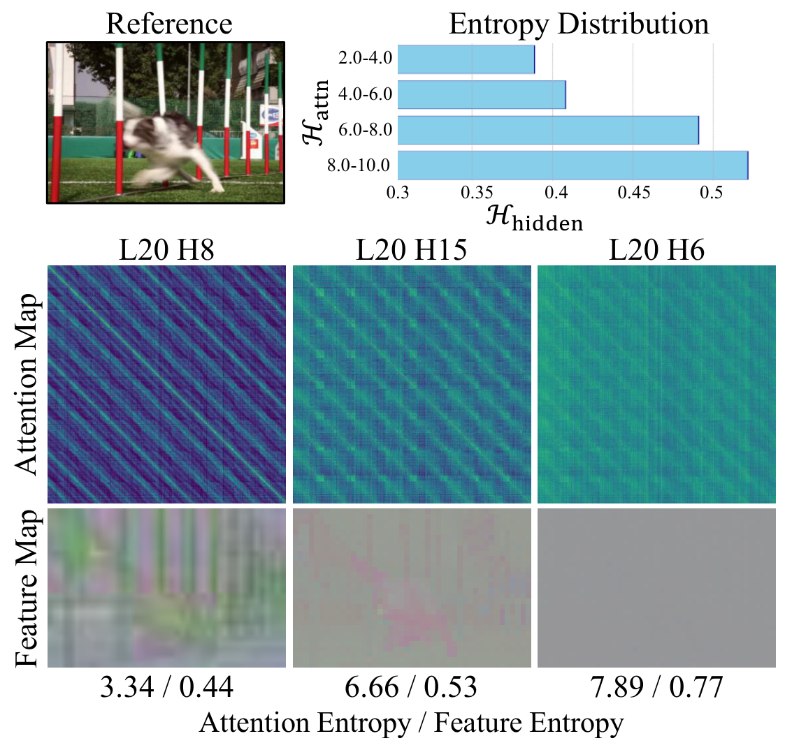
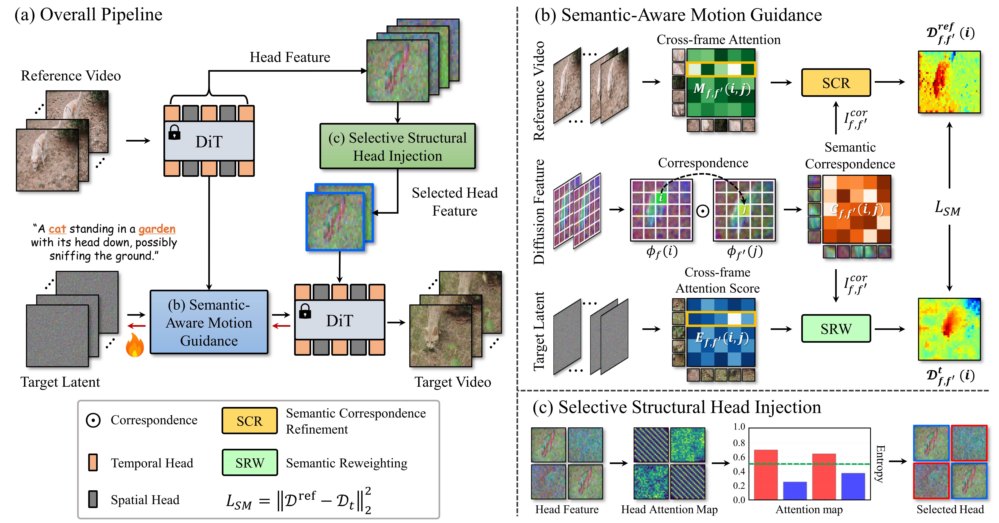
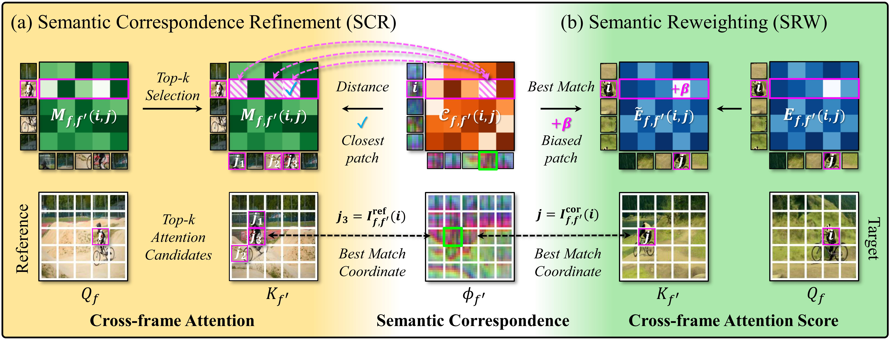
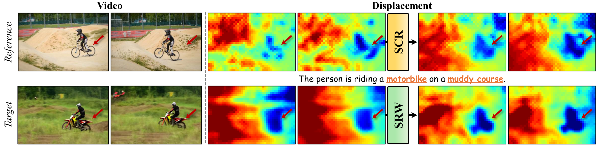
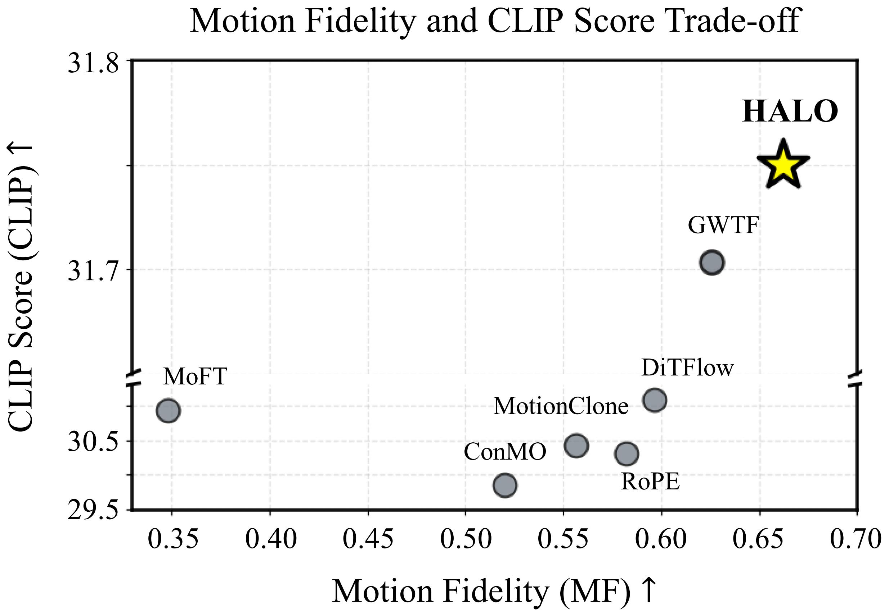
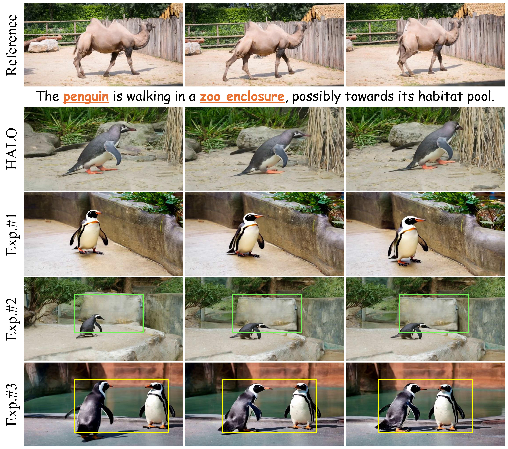

Why head-aware control?
Displacement-based motion transfer captures directional cues but ignores semantics and structure — so motion leaks into the wrong regions and spatial layout drifts.

HALO reveals that video Diffusion Transformers encode motion and structure in distinct attention heads, and leverages these heads with semantic-aware motion guidance and selective structural injection to enable training-free, prompt-aligned motion transfer with improved motion fidelity and structural alignment.
Diffusion Transformers (DiTs) have advanced video generation with high-quality, temporally coherent results. However, extending them to motion transfer — which requires following a reference motion while aligning with a target prompt — remains challenging due to a limited understanding of how motion and structure are represented within DiTs. We analyze video DiTs at the attention-head level and identify distinct heads specialized for motion and spatial structure. Based on this insight, we propose HALO, a head-aware controllable motion transfer framework that requires no parameter updates. Our method refines motion cues from motion-specialized heads via semantic correspondence guidance and preserves structure through selective feature injection from structurally informative heads. This head-level control not only enables accurate motion transfer but also provides an interpretable foundation for controllable video generation with DiTs.
What makes HALO work.
We present the first head-level analysis of video DiTs, revealing motion-specific and structure-specialized attention heads and validating them as control primitives for controllable video generation.
A training-free framework that enhances motion fidelity via semantic-aware displacement optimization and preserves spatial consistency via selective feature injection from structurally informative heads.
On standard motion transfer benchmarks and our new Movie Scene Dataset, HALO achieves better motion coherence and structural alignment than U-Net- and DiT-based baselines.
Displacement-based motion transfer captures directional cues but ignores semantics and structure — so motion leaks into the wrong regions and spatial layout drifts.
How are motion and structural cues internally encoded in video DiTs? We answer this with a head-level analysis, uncovering two distinct, functional head subsets.


HALO turns the two head insights into control: motion-specific heads guide semantic-aware motion optimization, while structure-specialized heads drive selective feature injection.



Raw cross-frame attention over-emphasizes visually similar but semantically unrelated regions. Semantic Correspondence Refinement (SCR) and Semantic Reweighting (SRW) use diffusion-feature similarities to refine the displacement map, yielding semantically coherent motion flow.
Displacement maps lack intra-frame structure. HALO injects value features from low-entropy, structure-specialized heads of the reference, supplying structure-aware guidance without noise or identity leakage.
Built on the CogVideoX video DiT (also validated on Wan) with no parameter updates. Head-level control adds only marginal overhead over displacement optimization while improving motion fidelity and structural alignment.
Pick an example. HALO transfers the reference motion while following the target prompt — staying motion- and structure-aligned where baselines drift, leak identity, or fail.
Videos autoplay muted and loop. Each panel is labeled with its method; HALO (Ours) is highlighted.

A production-oriented benchmark we curate for cinematic motion transfer. Even under complex film-style prompts, HALO preserves target identity while faithfully following the reference dynamics.

Motion transfer must jointly satisfy text alignment (CLIP) and motion fidelity (MF). HALO breaks the CLIP–MF trade-off seen in prior work while keeping strong structure and temporal scores.
| Type | Model | CLIP ↑ | TC ↑ | MF ↑ | FTD ↓ |
|---|---|---|---|---|---|
| U-Net | MoFT NeurIPS'24 | 30.9 | 85.8 | 34.8 | 23.0 |
| ConMo CVPR'25 | 29.8 | 85.3 | 52.0 | 17.4 | |
| MotionClone ICLR'25 | 30.4 | 78.6 | 55.6 | 19.8 | |
| DiT | DiTFlow CVPR'25 | 31.0 | 89.5 | 59.6 | 23.0 |
| RoPECraft NeurIPS'25 | 30.3 | 85.9 | 58.2 | 19.6 | |
| GWTF CVPR'25 | 31.6 | 88.2 | 62.5 | 21.6 | |
| Ours | HALO | 31.7 | 87.5 | 66.2 | 19.4 |
bold = best, underline = second best. TC slightly favors more static outputs.

| Model | CLIP ↑ | TC ↑ | MF ↑ |
|---|---|---|---|
| MotionClone | 27.1 | 74.5 | 47.7 |
| DiTFlow | 29.7 | 90.4 | 48.4 |
| RoPECraft | 28.3 | 88.2 | 49.1 |
| GWTF | 30.2 | 87.6 | 46.6 |
| HALO | 30.5 | 88.9 | 52.6 |
Methods requiring video masks are excluded.
| Model | Edit Acc. | TC | Motion Acc. |
|---|---|---|---|
| DiTFlow | 84.1 | 83.1 | 69.0 |
| RoPECraft | 72.4 | 75.6 | 77.6 |
| GWTF | 84.0 | 77.1 | 72.8 |
| HALO | 86.5 | 87.8 | 93.3 |
20 participants, 5-point Likert, normalized to 0–100.
| # | Semantic | Injection | CLIP ↑ | TC ↑ | MF ↑ | FTD ↓ |
|---|---|---|---|---|---|---|
| 1 | — | — | 31.0 | 89.5 | 59.6 | 23.0 |
| 2 | ✓ | — | 30.6 | 88.3 | 61.8 | 20.5 |
| 3 | — | ✓ | 30.9 | 88.5 | 61.3 | 20.9 |
| 4 | ✓ | ✓ | 31.7 | 87.5 | 66.2 | 19.4 |
Baseline is displacement optimization. "Semantic" = semantic-aware motion guidance; "Injection" = selective structural head injection.

@inproceedings{jung2026halo,
title = {Controlling Motion Transfer in Diffusion Transformers via Attention Heads},
author = {Jung, Sunyoung and Park, Jiwoo and Choi, Yoonseok and
Choo, Kyobin and Yang, Ming-Hsuan and Hwang, Seong Jae},
booktitle = {European Conference on Computer Vision (ECCV)},
year = {2026}
}